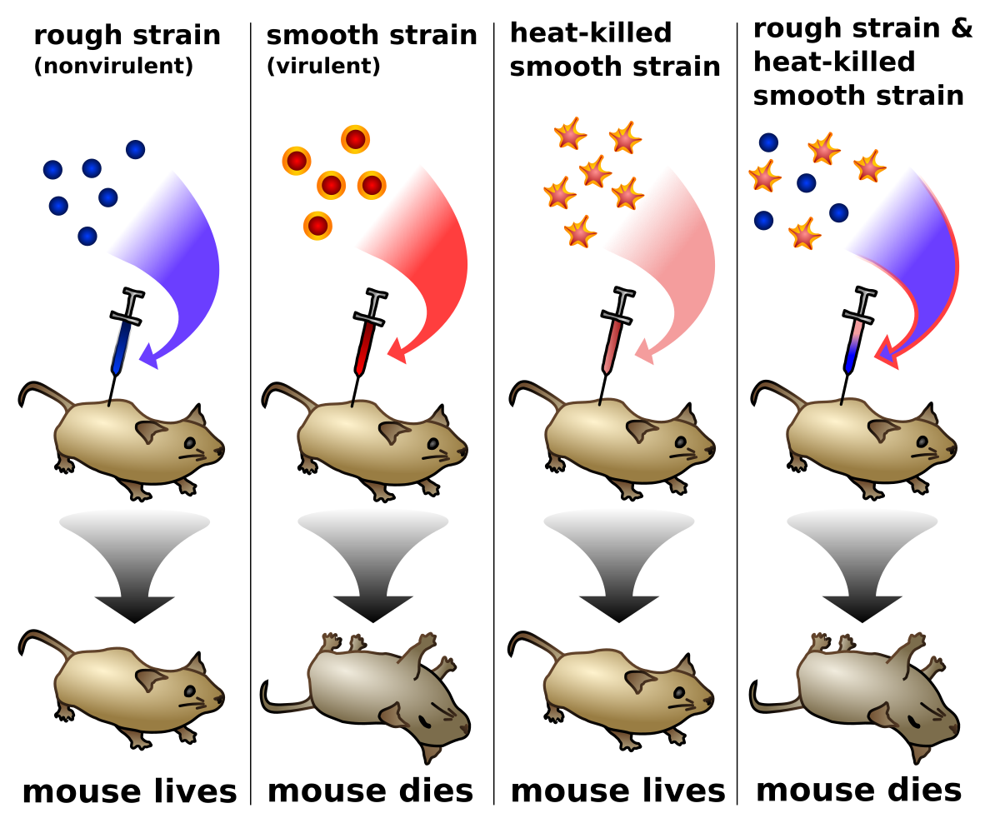

Els experiments més importants van ser:
En aquest experiment que podem veure a la imatge seguent es van utilitzar neumococs que es un tipus de bacteri que es diu aixi perquè provoca neumonia i coc perquè es de forma rodona
Van descobrir que havien dos tipus de neumococs: Els R o rugosos perquè quan creixien milers de milions en una colònia la colònia es veia rugosa i els S (smooth) o llisos perquè formaven una colònia llisa. Els neumococs R no tenen càpsula que és una paret cel·lular externa i no són virulents perquè no provoquen malaltia. Els neumococs S si tenen càpsula i són virulents.
Utilitzem 4 grups de ratolins:
Griffith (1928) va dir que hi havia un principi transformant perquè convertia bacteris no virulents en virulents
De l'experiment anterior sabiem que havia un principi transformant pero no sabiem si era ADN, ARDN o si era proteïna o un altre
Si jo barrejo neumococs S morts + neumococs R vius és produeix la transformacio i utilitzo 4 grups de ratolins i els que injecto tots els bacteris amb quimiotripsina o tripsina que destrueixen les proteïnes no afecta al principi transformant, els que injecto RNAasa que destrueix l'ADN no afecta al principi transformant i si els hi poso DNasa destrueix el ADN.
Elprincipi transformado es el ADN.